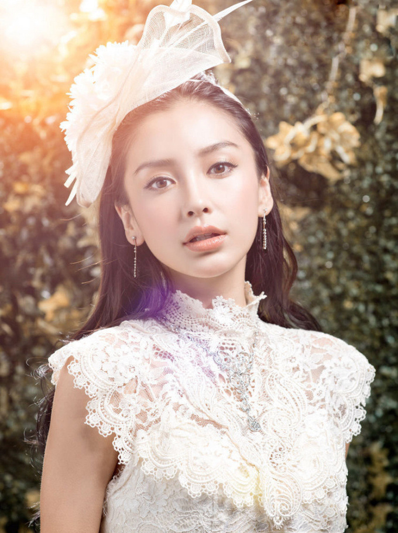

<!DOCTYPE html>
<html>
<head>
    <meta charset="UTF-8">
    <title></title>
    <style type="text/css">
        body, img {
            margin: 0;
            padding: 0;
        }

        img {
            width: 400px;
            border: none;
        }

        #oImg {
            position: absolute;
            left: 100px;
            top: 100px;
            width: 200px;
            border: none;
            border-radius: 50%;
            z-index: 10;
        }

        .blur {
           /* -webkit-filter: blur(10px);
            -moz-filter: blur(10px);
            -ms-filter: blur(10px);
            -o-filter: blur(10px);
            filter: blur(10px);*/
             -webkit-filter:sepia(0.5) grayscale(0.5);
            filter: progid:DXImageTransform.Microsoft.Blur(PixelRadius=10, MakeShadow=false); /*IE6~IE9 */
        }

        /*css3中的filter除了blur以外还添加了其他的属性*/
        /*
            -webkit-filter: normal; 正常
            -webkit-filter: grayscale(1); 灰度，取值范围0-1
            -webkit-filter: brightness(0.5); 亮度，取值范围0-1
            -webkit-filter: invert(1); 反色，取值范围0-1, 0为原图，1为彻底反色之后
            -webkit-filter: sepia(0.5); 叠加褐色，取值范围0-1
            -webkit-filter: hue-rotate(30deg); 色相（按照色相环进行旋转，顺时针方向，红-橙-黄-黄绿-绿-蓝绿-蓝-蓝紫-紫-紫红-红）此处为叠加黄色滤镜
            -webkit-filter: saturate(4); 饱和度，取值范围0 ~ *, 0为无饱和度，1为原图，值越高饱和度越大
            -webkit-filter: contrast(2); 对比度，取值范围0 ~ *, 0为无对比度（灰色），1为原图，值越高对比度越大
            -webkit-filter: opacity(0.8); 透明度，取值范围0 ~ 1, 0为全透明，1为原图
            -webkit-filter: drop-shadow(0 0 20px red); 阴影
        */
       /* .other {
            -webkit-filter: grayscale(0.5) sepia(0.5);
        }*/
    </style>
</head>
<body>
<!--  -->

</body>
</html>